Longitudinal latent outcome modeling in “N-of-few”
Tackling trial design challenges of individualized treatments for rare motor diseases using multivariate digital motor outcomesBackground
In the context of individualized treatments for rare diseases, traditional clinical trials are often not feasible due to a limited sample size. Since treatments may take substantial time to show effects, traditional N-of-1 crossover designs tend to be impractical as well.
A model of patients' disease severity over time constitutes one potential alternative. A deviation from the expected progression could thus represent evidence for a treatment effect, albeit without proof of causality. To obtain a reliable, temporally stable approximation of true disease severity, a rich set of proxy measures is likely advantageous.
This work focuses on a dataset of spinocerebellar ataxia patients and healthy controls with yearly follow-ups. In addition to clinician- and patient-rated outcomes, the data include sensor-based recordings of subjects' walking, both under laboratory settings as well as in their everyday lives.
The final objective is to have a model capable of showing a hypothetical treatment effect after 1-2 years in 1-5 treated patients.
Data
Gait feature extraction
Per-stride gait features are extracted from the raw sensor data by algorithmic pipelines. These are then aggregated to per-walking-bout features, and in turn to per-visit features, which constitute the digital motor outcomes (DMOs) to be used alongside other per-visit meaures. The aggregation steps can include stratification by walking environment proxies to further refine the resulting set of DMOs.
Per-visit outcomes
Shown below as an example is the DMO lateral step deviation, plotted over time relative to the estimated disease onset for every visit of every subject.
Previous results
Cross-sectional comparison
In a cross-sectional comparison of healthy controls vs. patients (further stratified by the clinical score SARA), various DMOs such as e.g. the lateral step deviation show significant differences.
Paired-samples longitudinal comparison
In a classic paired-samples longitudinal comparison, both the clinical assessments as well as the DMOs (lateral step deviation shown above again as an example) only begin to show significant changes after several years. The sample sizes required to show a meaningful treatment effect after a single year are estimated to be on the order of several hundreds.
Paired-samples longitudinal change correlation
Shown below is the 1-, 2-, and 3-year change of the lateral step deviation plotted against the change of the clinical score SARA. A correlation only starts to take hold after 3 years, further corroborating the temporal instability.
Outcome ranking
Due to the combinatorics of using a multitude of stride features, transformations thereof, context strata, and aggregation modalities, the number of available candidate DMOs is enormous. A rough assessment based on the cross-sectional and longitudinal analyses allows to screen and rank the DMOs for their suitability. The table below is an excerpt of such a ranking, sorted by the main metric ess, the pooled estimated 1-year sample size.
Preliminary results
Single-outcome trajectory modeling

A fixed-effects panel model allows to model the full trajectories of individual outcomes and to obtain relatively reliable future prediction intervals (using non-parametric estimators, as the data are ill-behaved in various ways). As single DMOs such as the lateral step deviation exhibit substantial variance, the resultung intervals are large. Furthermore, this particular choice of model lacks the partial pooling of a true mixed-effects model, and moreover does not allow to estimate the time point along the independent axis where the outcome starts to deviate from the healthy baseline, leading to misspecification in some cases.
Optimized composite outcome measures
Combining multiple outcomes into a single, more reliable measure of disease severity can be formulated as an optimization problem. As an initial attempt, several sets of top-ranking features were hand-picked. On each set, a regression of the change around the within-subject mean to the corresponding change in diseased time was performed. The resulting outcomes are listed in the ranking table (see below) as test_dw_instance_compound_… and do indeed show favorable characteristics.
Discussion & Outlook
With limited numbers of both subjects and time points, the reliability of the outcome measures becomes the key factor determining the statistical power. Considered as a whole, the rich pool of available outcomes has the potential to contain sufficient information to achieve the "N-of-few" goal.
Instead of combining outcomes into a single measure and modeling its trajectory, the logical next step would be a model that encompasses both simultaneously: A longitudinal model of latent disease severity. This model would consider as much information as possible when predicting a patient's future disease progression. Namely:
- The patient's own historical progression
- Other patients' and controls' progression patterns
- Multiple outcome measures
Key considerations:
- Few covariates other than time
- Generally sigmoidal shape with unknown asymptotes and offset
- Ill-behavedness:
- Heteroskedasticity
- Selection/attrition bias ("informative drop-out"?)
- Disease onset estimate has non-negligible error
- Disease onset estimate is not available for some patients
- Modeling on walking-bout level instead of visit level is an option
- Non-Bayesian approaches (e.g. structural equation modeling) will likely still require Monte Carlo methods due to ill-behavedness
| outcome | ess | rb_lgt | rb_crs | ρ_ΔΔ_2y | agr | |||||
|---|---|---|---|---|---|---|---|---|---|---|
| 1y | 2y | 3y | sym | sara<8 | sara≥8 | sara | -abc | |||
| test_dw_instance_compound_5 | 39 | .86 | .75 | .96 | .84 | .17 | .77 | .32 | .12 | 1 |
| test_dw_instance_compound_3 | 45 | .82 | .66 | .93 | .77 | .046 | .7 | .26 | .26 | 1 |
| test_dw_instance_compound_2 | 55 | .77 | .78 | .78 | .65 | .17 | .67 | .58 | .21 | 1 |
| coeff_swings_sensor_lumbar_acc_dft_x_3_abs_d3_abs_μ /γ /short /μ | 63 | -.67 | -.82 | -.54 | -.33 | -.46 | .056 | -.27 | .21 | .71 |
| test_dw_instance_compound_4 | 66 | .79 | .65 | .36 | .78 | .64 | .53 | .33 | .2 | 1 |
| agg_adjacent_swings_resampled_sensor_lumbar_acc_x_r_d1_abs_μ /σ /curvy_long /μ | 74 | .71 | .45 | .76 | .47 | .048 | .72 | -.5 | -.06 | .71 |
| agg_adjacent_swings_resampled_sensor_lumbar_gyr_x_r_abs_d3_abs_μ/γ /long /μ | 81 | -.76 | -.58 | -.38 | -.41 | -.18 | -.011 | -.43 | -.066 | 1 |
| agg_adjacent_swings_resampled_sensor_lumbar_acc_x_r_μ /σ /curvy_long /μ | 83 | .62 | .62 | .67 | .47 | .13 | .72 | -.32 | .0055 | .86 |
| swing_duration_d3_abs_μ /cv /all /μ | 85 | -.77 | -.39 | -.71 | -.31 | -.093 | -.29 | -.21 | -.077 | 1 |
| agg_adjacent_swings_resampled_sensor_lumbar_gyr_z_r_abs_μ /σ /long /μ | 86 | .68 | .46 | .54 | .47 | .19 | .52 | -.036 | .2 | .86 |
| coeff_swings_sensor_acc_dft_z_2_real_μ /μ /long /μ | 86 | .65 | .63 | .6 | .45 | -.14 | .59 | .19 | .18 | .86 |
| agg_adjacent_swings_resampled_sensor_lumbar_gyr_z_r_abs_d1_abs_μ/σ /long /μ | 88 | .72 | .4 | .41 | .51 | .3 | .49 | .062 | .32 | 1 |
| shannon_entropy_3_walking_segments_sensor_feet_gyr_z /curvy_long/μ | 88 | -.59 | -.64 | -.45 | -.49 | -.22 | -.43 | -.34 | -.016 | 1 |
| agg_adjacent_swings_resampled_sensor_lumbar_acc_x_r_abs_μ /σ /curvy_long /μ | 88 | .58 | .66 | .65 | .46 | .11 | .74 | -.3 | .21 | .86 |
| agg_adjacent_swings_resampled_sensor_lumbar_gyr_z_r_abs_d3_abs_μ/σ /long /μ | 89 | .71 | .42 | .38 | .48 | .31 | .47 | .11 | .093 | 1 |
| coeff_swings_sensor_acc_dft_x_1_real_abs_μ /cv /curvy_long /μ | 89 | .57 | .81 | .63 | .44 | .029 | .49 | .0013 | -.19 | .86 |
| agg_adjacent_swings_resampled_sensor_lumbar_gyr_z_r_μ /σ /curvy_long /μ | 89 | .63 | .68 | .63 | .44 | -.12 | .77 | .31 | .26 | .86 |
| coeff_swings_sensor_acc_dft_x_3_angle_d1_abs_μ /σ /curvy_long /μ | 90 | .52 | .84 | .52 | .34 | .033 | .41 | -.14 | -.027 | .71 |
| stance_apdm_d2_abs_μ /γ /short /μ | 90 | -.78 | -.64 | -.74 | -.4 | -.33 | -.033 | -.43 | -.16 | 1 |
| swing_apdm_d2_abs_μ /γ /short /μ | 90 | -.78 | -.64 | -.74 | -.4 | -.33 | -.033 | -.43 | -.16 | 1 |
| maximum_pitch_apdm_d1_abs_μ /γ /short /μ | 90 | -.93 | -.39 | -.63 | -.3 | -.35 | -.033 | -.4 | -.011 | 1 |
| stance_duration_μ /cv /curvy_long /μ | 90 | .65 | .76 | .38 | .63 | -.033 | .73 | .25 | -.43 | .71 |
Lasse Schlör
lasse-schloer@unibo.it
MSCA MMM Doctoral Network
mHealth Technologies srl
Department of Electrical, Electronic, and Information
Engineering
University of Bologna

Funded by the European Union’s Horizon Europe Marie Skłodowska-Curie Actions scheme, GA no. 101120256.